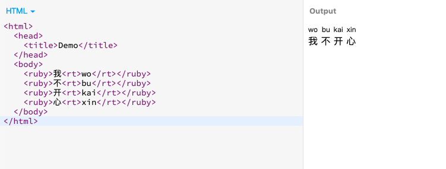
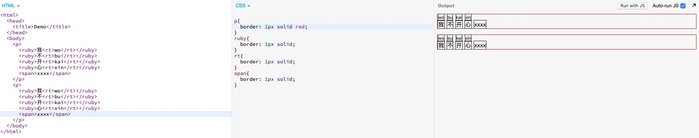
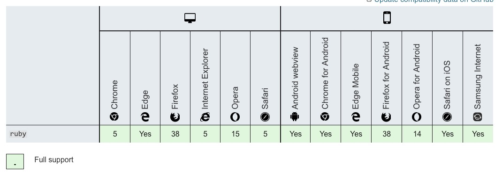

拼音到底应该怎么打
昨晚在刷知乎的时候看到一个有意思的东西，说不定以后可能会用到。
关于拼英怎么显示的问题。
之前有自己想过，如果让我自己去实现拼音的显示，大致的思路可能就是调整文本的行高。对每个文字增加伪元素或者写额外的拼音元素用定位来进行展示。
昨天看到了另外一种展示的方法。
使用<ruby>元素来进行展示。
Demo:
<html>
<head>
<title>Demo</title>
</head>
<body>
<ruby>我<rt>wo</rt></ruby>
<ruby>不<rt>bu</rt></ruby>
<ruby>开<rt>kai</rt></ruby>
<ruby>心<rt>xin</rt></ruby>
</body>
</html>

一些属性：
根据 MDN 上面所写，<ruby>元素是专门用来展示东亚文字注音或字符注释。（脑补： 拼音？片甲？🤦♂️）
尝试后感觉应该是非块状元素。注音和文字本身都受 font 相关的 css 属性影响。
关于文字的行高，界限大致如图可以看到

兼容性比想象中的好很多 
另外
配套使用的<rt>和<rp>各自有各自的用途
<rt>元素主要是用来包裹注音的内容。
<rp>元素主要是当<rt>元素不支持上标的时候。用来代替使用的。
demo：
<ruby>
漢 <rp>(</rp><rt>han</rt><rp>)</rp>
字 <rp>(</rp><rt>zi</rt><rp>)</rp>
</ruby>
至此～
ps： 周一日常丧（´-`）